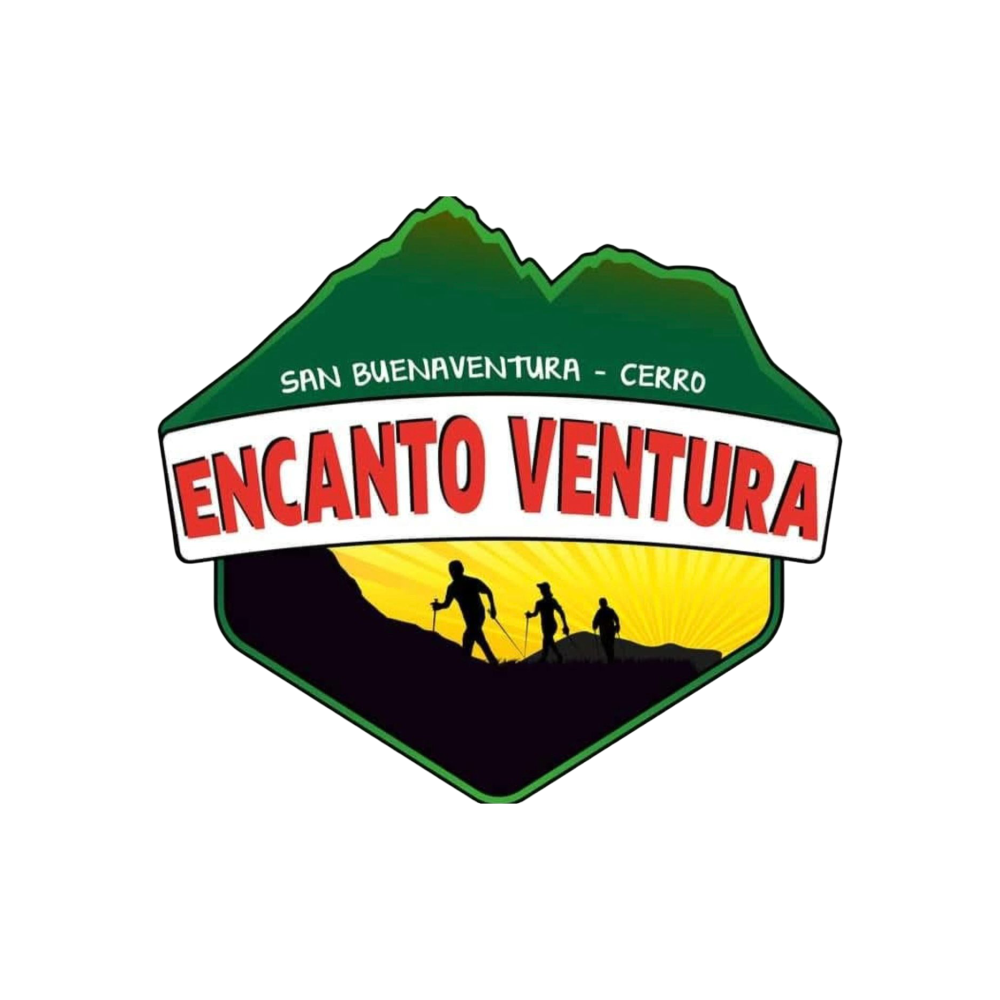
Tres recorridos en un solo día: Cerro El Encanto, Cerro Buenaventura y el Cañón del Río Aranjuez.
Reservar ahora Ver recorridosSOBRE NOSOTROS
Todo comenzó en 2017, cuando soñamos con crear este espacio para compartir la naturaleza que nos rodea. Hoy, cada día más personas nos visitan, y eso nos llena de orgullo y de motivación.
Somos una familia que trabaja con mucho cariño para que conozcas y vivas esta experiencia. Vamos poco a poco, mejorando cada día, y siempre con las puertas abiertas para recibirte.
Aire puro y paisajes hermosos.
Rutas para distintos niveles.
Desayuno y almuerzo incluidos.
Recorrido acompañado en todo momento.
RECORRIDOS
Importante: se trabaja únicamente bajo reserva previa vía WhatsApp.
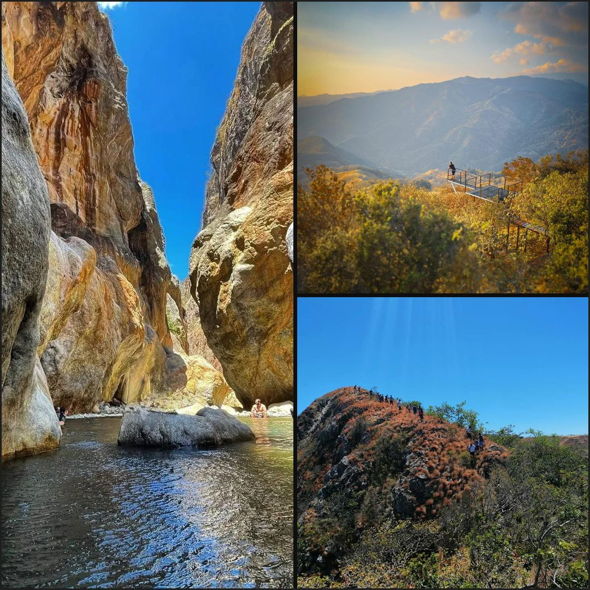
Ruta: Cerro El Encanto, Cerro Buenaventura y Cañón del Río Aranjuez
Distancia: 12 kilómetros total (incluido el km de Cerro Buenaventura)
Duración: 6 horas aproximadamente
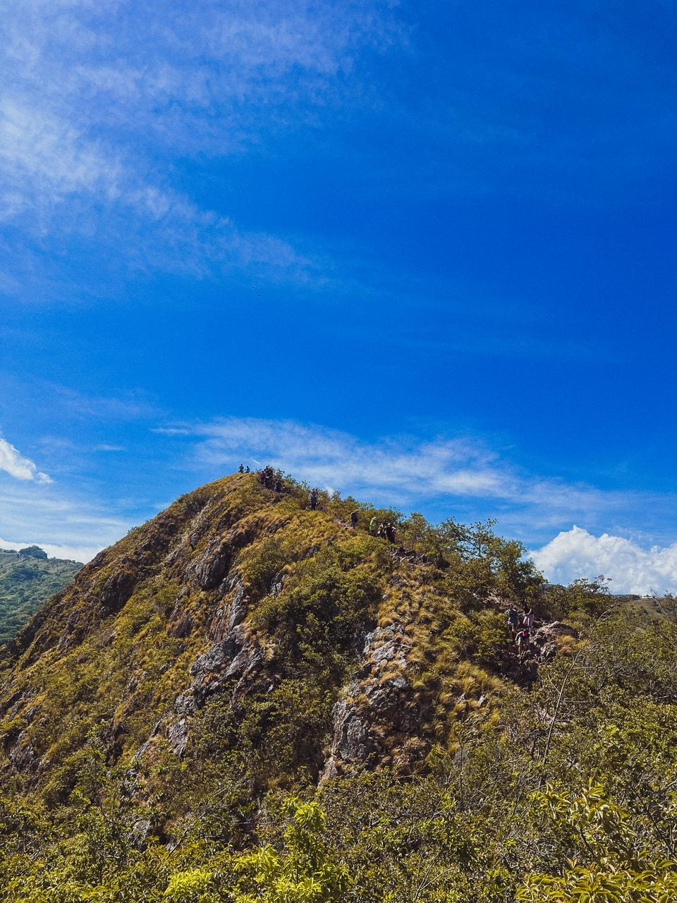
Ruta: Cumbre de Cerro El Encanto
Duración: 3 horas aproximadamente
Ideal para: quienes buscan una caminata de menor distancia con vistas espectaculares
MIRADORES
Durante el Tour Completo conocerás los miradores de Cerro Buenaventura, con vistas increíbles al horizonte.
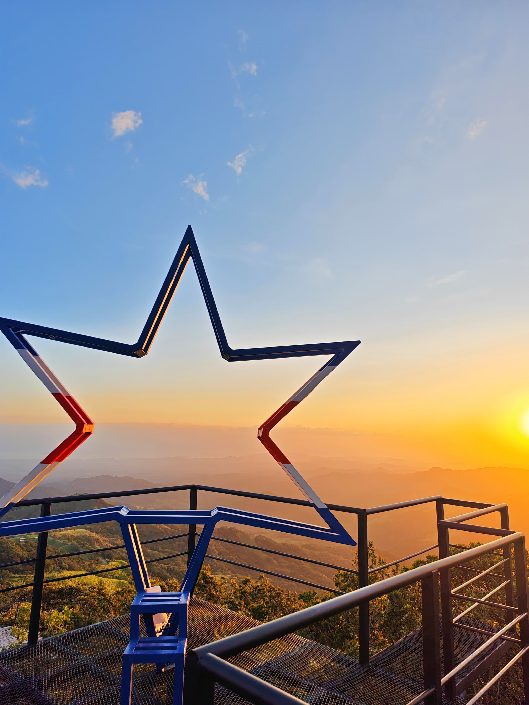
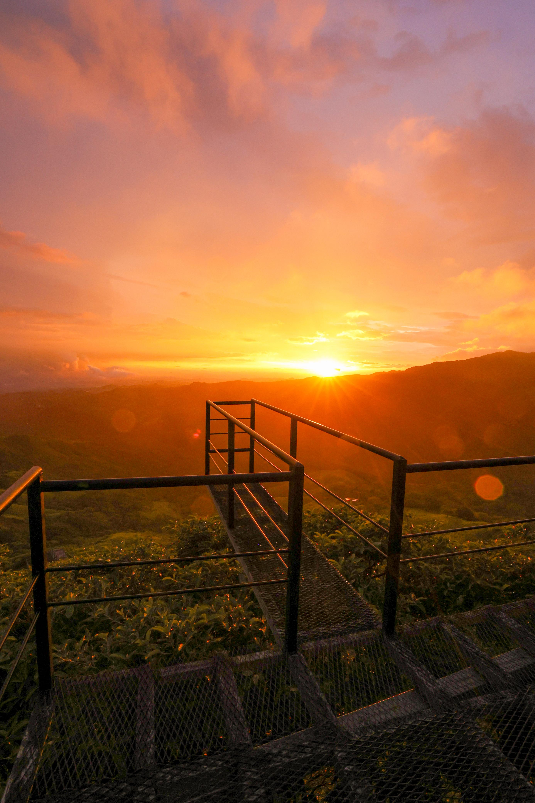
TARIFAS
₡15,000 por persona
₡14,000 por persona, grupos de más de 12
Desayuno: típico nacional, con café, jugo de naranja o agua dulce.
Almuerzo (a elegir):
Todos los casados se acompañan con fresco natural.
RECOMENDACIONES
GALERÍA
🐾 ¡Somos pet friendly! Tu mascota también es bienvenida.
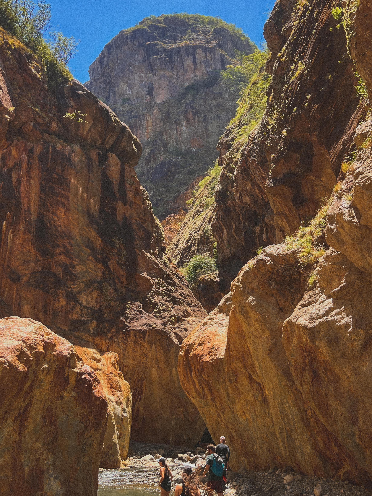
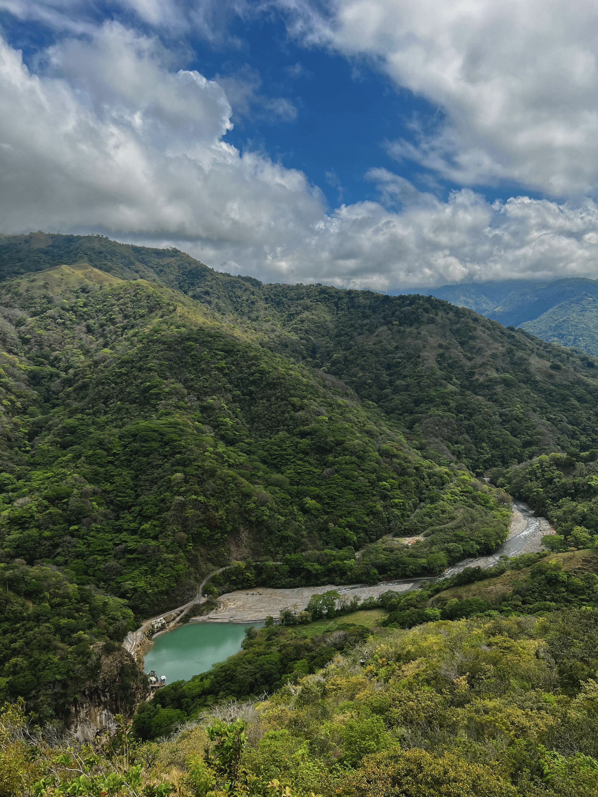
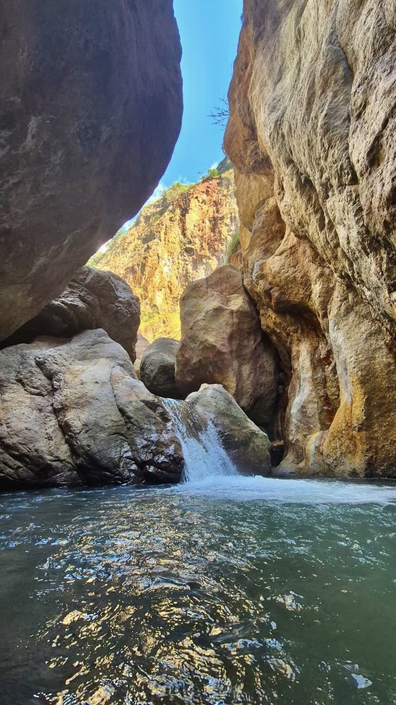
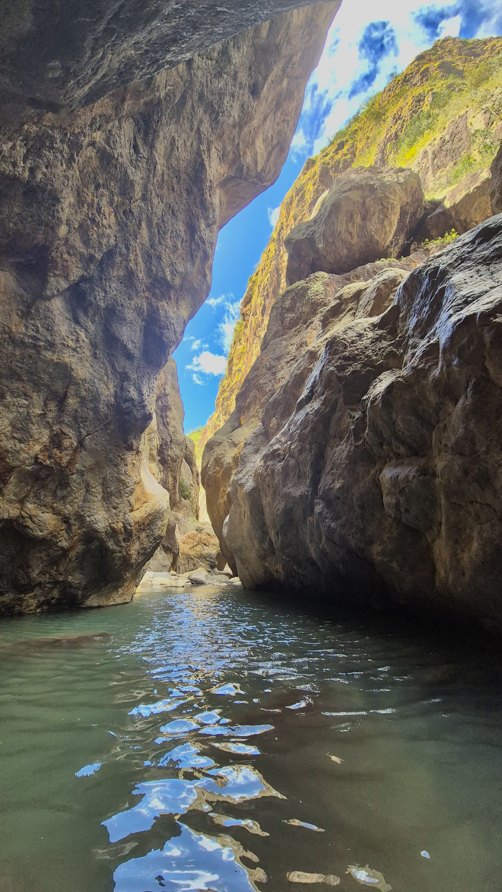
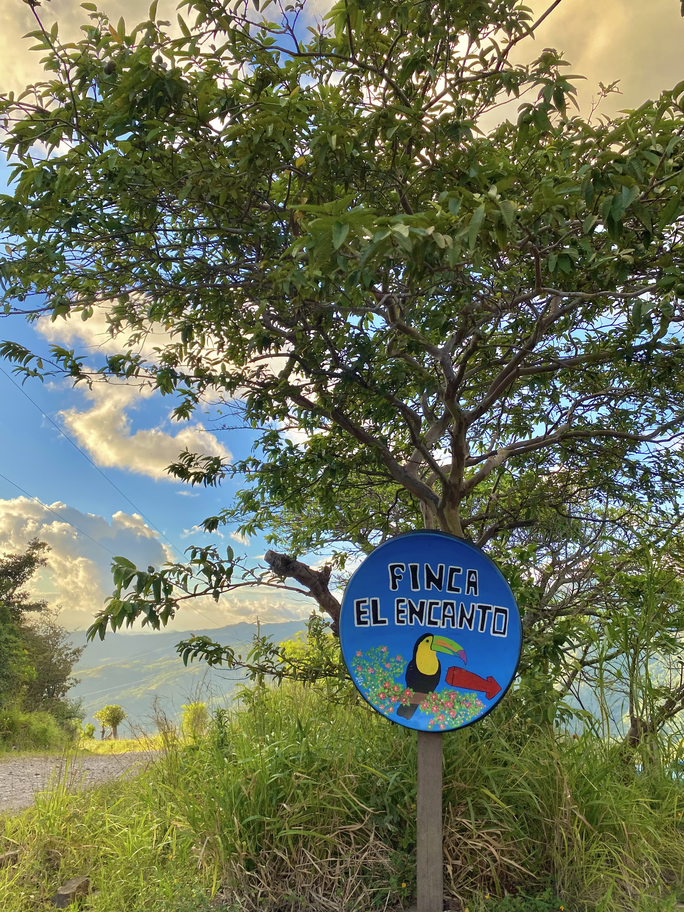
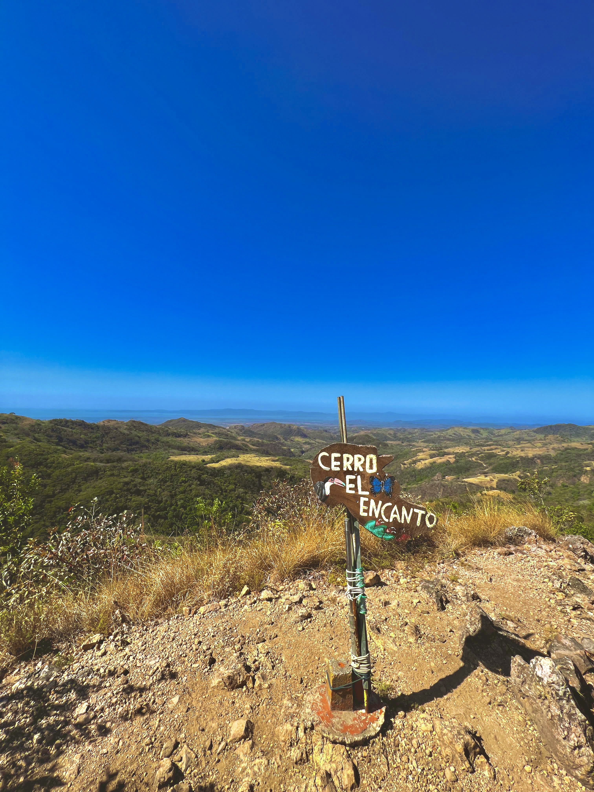
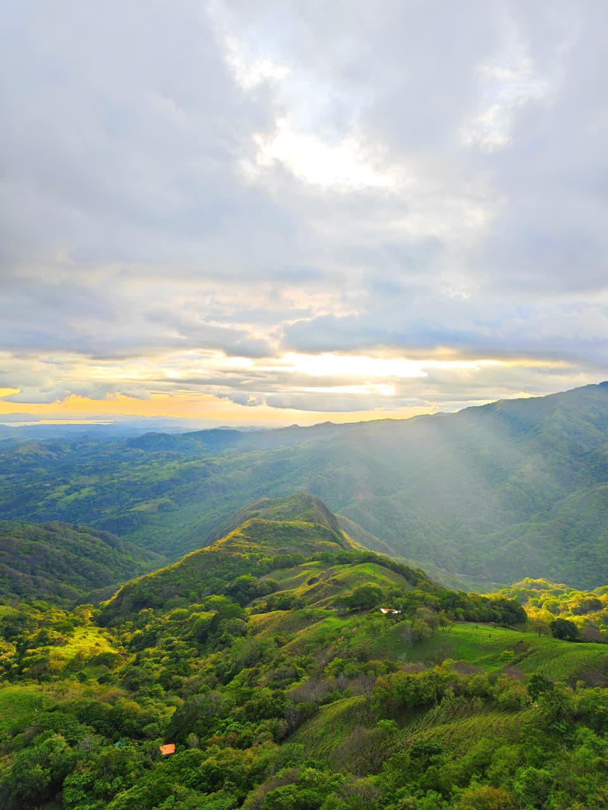
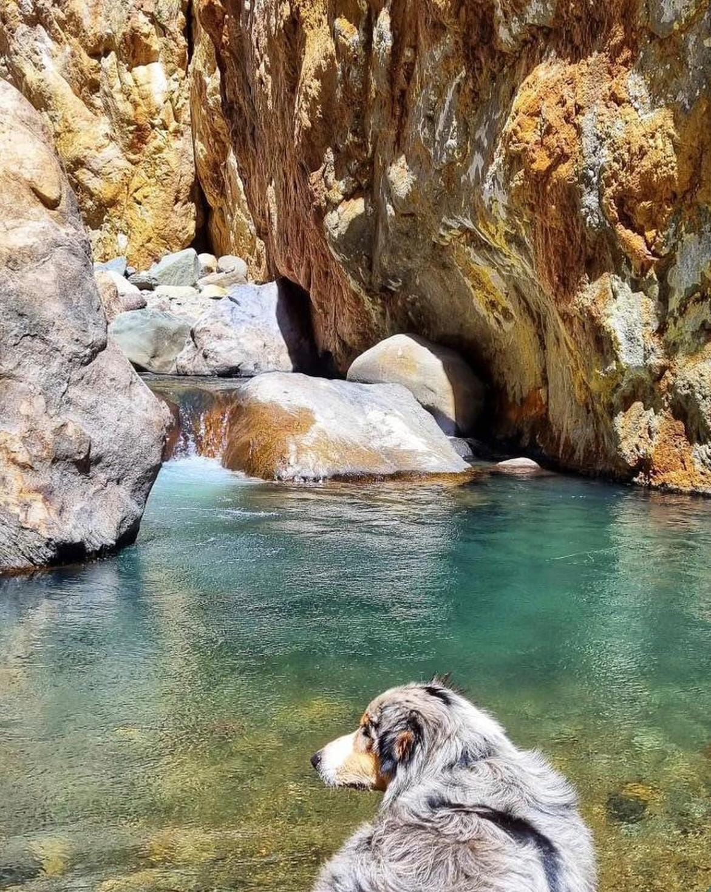
CONTACTO
Las reservas e información se manejan por WhatsApp.
📍 Ubicación: San Buenaventura, La Union Montes de Oro,Puntarenas,Costa Rica
📞 WhatsApp: +506 8422 2310
Reservar por WhatsApp